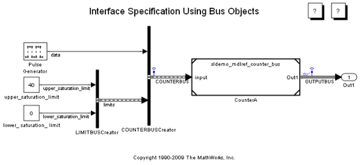

Bus オブジェクトを使ったインターフェイス指定
このデモでは、バス信号を参照モデルに伝播する方法を説明します。また、親モデルからのログ信号データを使用して参照モデルを個別にシミュレートする方法も示します。(モデル参照の簡単な紹介は、モデル参照によるコンポーネントベースのモデル化 を参照してください。データのログを作成するための信号の設定の詳細は、Simulink® ドキュメンテーションを参照してください。)
目次
デモ モデルを開く
デモの要件
このデモの実行中、現在の作業ディレクトリ内に作成された Simulink プロジェクト ディレクトリにコードが生成される場合があります。このディレクトリにファイルを生成したくない (または生成できない) 場合は、作業ディレクトリを適切なディレクトリに変更する必要があります。スタンドアロン アプリケーションで配布されるようにするために、Real-Time Workshop でモデル参照の Real-Time Workshop ターゲットが生成される必要があります。
デモ用のバス信号設定の説明
このモデル sldemo_mdlref_bus には、単純なカウンターのモデル sldemo_mdlref_counter_bus を参照する Model ブロック CounterA が含まれています。COUNTERBUS と呼ばれるバス信号により、データと、このカウンターの飽和の上限および下限が、モデルに入力されます。COUNTERBUS には、データと LIMITBUS の 2 つの信号が含まれています。データ信号はカウントに使用され、LIMITBUS にはカウンターの上限値および下限値が含まれています。COUNTERBUS の構造は以下のとおりです。
* COUNTERBUS (バス信号)
* データ
* LIMITBUS (バス信号)
* upper_saturation_limit
* lower_saturation_limitこのデモには sldemo_mdlref_counter_bus.mat という名前の MAT ファイルも含まれています。このファイルにより、COUNTERBUS および LIMITBUS の要素を定義する Bus オブジェクトが作成されます。このモデルが読み込まれると、sldemo_mdlref_bus のプリロード関数によってこの MAT ファイルが読み込まれ、Bus オブジェクトが MATLAB® ワークスペースに作成されます。
メモ: モデル エクスプローラーで MATLAB ワークスペースを選択することにより、これらのオブジェクトを表示できます。バス エディターでバスの構造体を表示することもできます。MATLAB コマンド プロンプトで buseditor と入力することにより、バス エディターを開くことができます。これらの Bus オブジェクトは、以下の Bus Creator ブロックの出力を指定するために使用されます。
- COUNTERBUSCreator
- LIMITBUSCreator
参照モデル sldemo_mdlref_counter_bus の Inport によって、COUNTERBUS バス オブジェクトが [入力バスを有効にするための Bus オブジェクト] フィールドで指定され、パラメーター ダイアログの [信号の指定] タブの [Bus オブジェクトによりプロパティを指定] オプションがオンになり、端子が COUNTERBUS タイプのバスを受け入れるように設定されます。
COUNTERBUS 信号は sldemo_mdlref_bus で信号のログを作成するマーカーが指定されています。このモデルをシミュレートすると、ログが作成された信号は topOut という変数の MATLAB ワークスペースで使用可能になります。参照モデル sldemo_mdlref_counter_bus は、ログが作成された信号データをルートの Inport ブロックを通じて読み込むように設定されています。これがどのように行われるかを見るには、参照モデルの [コンフィギュレーション パラメーター] ダイアログを開き、[データのインポート/エクスポート] タブをクリックします。このダイアログの [インポート] フィールドは、ログ データ topOut が読み込まれるように設定されています。
シミュレートして出力を表示
これで、sldemo_mdlref_bus をシミュレート し、Scope ウィンドウで出力を表示することができます。
ログが作成された信号データは、変数 topOut の下の MATLAB ワークスペースにあるはずです。参照モデル sldemo_mdlref_counter_bus により、上記のようにログが作成された TimeSeries データが読み込まれます。
参照モデル sldemo_mdlref_counter_bus を開く
sldemo_mdlref_counter_bus をシミュレート し、Scope ウィンドウで出力を表示することができます。sldemo_mdlref_bus と sldemo_mdlref_counter_bus からの Scope に同じトレースが表示されます。参照モデルの Scope に入力する信号もログが作成されます。ログが作成されたデータは、変数 subOut の下の MATLAB ワークスペースにあります。topOut と subOut のデータが同じであることを検証できます。
スタンドアロン アプリケーション用のコード生成 (Real-Time Workshop® が必要)
実行可能ファイルを作成し、sldemo_mdlref_bus のコードを調べます。